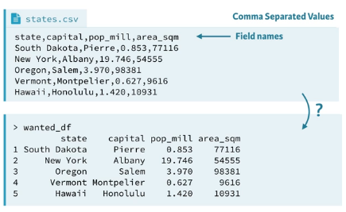

3 Part 1
Anotações para o curso do Datacamp ministrado pelo Filip Schouwenaars.
Aqui aprenderemos a importar dados no R para começar análises. Estaremos trabalhando com variados tipos de arquivos.
3.1 Importing data from flat files with utils
O que faremos quando precisamos transitar de Excel para R? Nesse curso aprenderemos a trabalhar com dados de 5 tipos de dados:
- Flat files
- “Arquivos com estrutura de campos horizontal – cada registro corresponde a uma linha de dados onde os campos estão organizados posicionalmente ou por algum tipo de separador (vírgula, espaço em branco etc)” Fonte
- O que fazemos quando os dados estão separados por vírgulas?
wanted_df <- read.csv("states.csv", stringsAsFactors = False)- 
- Se o arquivo não estiver no diretório de trabalho, terá que escrever o seu
PATH(caminho), por exemplo, se estiver na pasta denominada dados no seu diretório de trabalho"dados/state.csv".- Poderá alternativamente usar
caminho <- file.path("-", "datasets", "states.csv")para encontrar a path que utilizará e guardar numa variável como caminho.
- Poderá alternativamente usar
stringsAsFactorséFALSE, pois o default éTRUE, porém não queremos puxar os dados no formato de caracteres como categorias.
- Dados do Excel
- Bases de Dados (PostgneSQL, MySQL)
- Web
- Software de Estatística (SPSS, STATA, SAS)